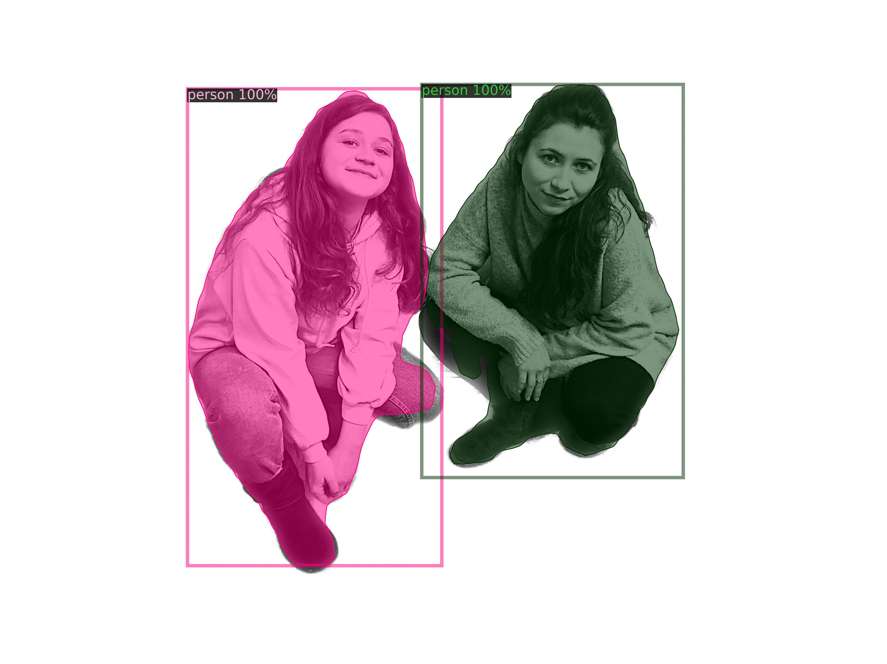

is a research-based collective working at the intersection of art and design. In their practice they search for new forms of creative expression. By critically and practically engaging with technology, new media and artificial intelligence the duo examines the social effects of our networked cultures.
rawlab.xyz / @rawlab.xyz / rawlab.xyz@gmail.com
Radina Yotova is an interactive designer based between Sofia & The Hague. Radina graduated with a Bachelor’s degree in Graphic Design from the Royal Academy of Art, The Hague in 2022. Her main interest lies in image-making and storytelling, produced and designed by means of new media technology. Some of the topics she is passionate about are social behaviour, participatory culture, network culture, and computer vision.
radinayotova.eu / @gradinaaa
Roslana Yotova is a graphic designer and creative coder focusing her practice on human-machine interactions. She graduated with a Bachelor’s degree in Graphic Design from the Royal Academy of Art, The Hague in 2019.
Since 2022 Radina Yotova and Roslana Yotova have united their creative practice and work together as rawlab.
